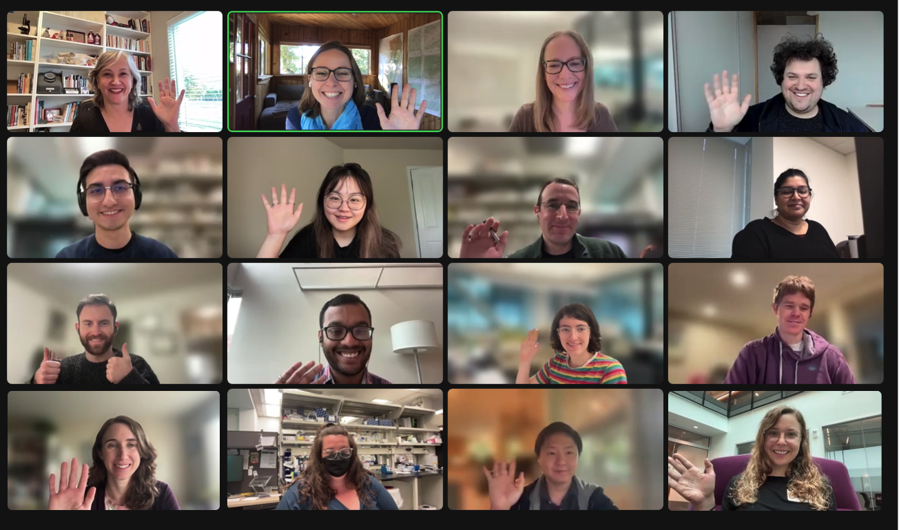
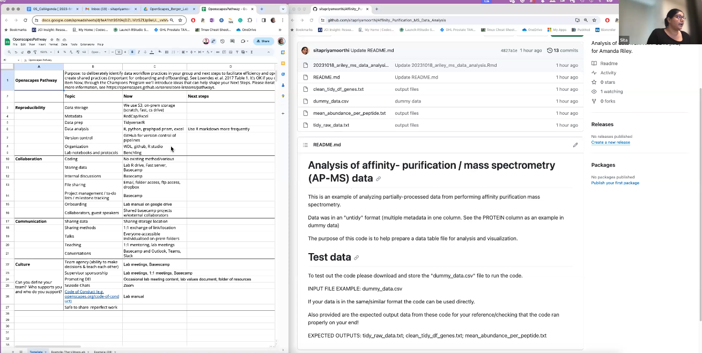

![]()
In Fall 2023, We ran our first ever Openscapes Champions Program for research labs at the Fred Hutchinson Cancer Center, in collaboration with the Fred Hutch Data Science Lab (DaSL). This post is a summary and celebration of their work.
Quicklinks:
- Cohort webpage: https://openscapes.github.io/2023-fred-hutch/
Fred Hutch and Openscapes
The 2023 Fred Hutch Openscapes Champions Cohort represented a few “firsts”, and was possible because of open community networks and aligned values. It was Openscapes’ first Champions Cohort for the Fred Hutchinson Cancer Center, in collaboration with the Fred Hutch Data Science Lab (DaSL). It was also one of the first opportunities that DaSL is offering the Fred Hutch community. This collaboration came to be through longtime connections with Openscapes and DaSL’s Sean Kross and Monica Gerber via the R community (rOpenSci, RLadies and RStudio connections). We were thrilled to have this opportunity and to see all the progress made by the teams throughout the Cohort. Openscapes has focused its previous 19 Cohorts with environmental and Earth scientists, with a focus on climate change and social solutions. Our missions aligned around social change that is enabled by cancer research; and how via open data science we can connect our biggest challenges with our daily work and grow collective agency, voice, action.

Core lessons reused for new science audiences
The inaugural Fred Hutch Champions Cohort took place over 5 virtual sessions from August 29 to October 24, 2023. We were able to reuse the same core lessons for this Cohort, which is important for growing the open movement. Core lessons designed for environmental scientists and iteratively refined over years with Erin Robinson and Eli Holmes for Earth and fisheries scientists also resonate with cancer scientists. Stefanie Butland contributed a new “Better science for future us” lesson in Call 1, sharing her open science path - from me to us as a scientist at the interface of biological and computational sciences.
Cohort calls focused on 1) working towards a common understanding of the Openscapes mindset and considering what a pathway forward looks like for your team (Call 1 digest), 2) publishing and project management on GitHub (Call 2 digest), 3) nurturing team culture, and data strategies for future us (Call 3 digest), 4) participating in open science communities, and coding strategies for future us (Call 4 digest), and 5) sharing each team’s path forward as they continue their open science journeys (Call 5 digest). Call 5 is when we hear from each team about their work-in-progress, challenges, and questions. We appreciated hearing so many voices in this final call, from presenting teams and Fred Hutch colleagues.
The teams and their pathways
The Berger Lab’s research goal is to leverage functional genomics approaches to understand cancer biology and translate this information into better outcomes for cancer patients. Openscapes participants in this Cohort included Alice Berger, Sitapriya Moorthi, Daniel Groso, Kevin Levine, Siobhan O’Brien, and Saksham Gupta. Alice talked through the team’s Pathway sheet, identifying their trailhead and areas they’d like to explore. that provides a structured way for teams to think about how they work and find common approaches and needs. Sita put an example analysis in a GitHub repo shared with the lab for the first time. She’s done this so others can reuse or adapt the code and have an example to follow for more open practice. There’s a good lesson here: open doesn’t have to mean fully public; it can be private to Fred Hutch, or even just your lab. Daniel was inspired to use GitHub Issues and screenshared a checklist for the week with people’s replies. This led to a discussion of Issue templates and other recurrent processes they could use a checklist or template for. As an example, Monica (DaSL) shared a package she made that contains basic analysis templates for writing reproducible reports for the Vaccine Immunology Statistical Center. She’s developing more of these for DaSL.

The Ha Lab uses computational genomics and liquid biopsies to study cancer and to advance precision medicine. Openscapes participants in this Cohort included Patty Galipeau, Thomas Persse, Eden Cruikshank, Michael Yang, Adil Mohamed, and Manasvita Vashisth. Thomas raised the challenges of version control and code sharing when changes made downstream are not pushed back to the main GitHub repo. Monica noted that slowing down to speed up is key here; behavior change takes time and care but the benefits are huge. Patty screenshared her use of the project management tool Jira (supported by Fred Hutch). It requires upfront infrastructure development, but it’s worth it. She is piloting Starfish, a software application for unstructured data management, for viewing all your files, tagging them with metadata or actions like ’moved to S3, and for visualizations of file sizes and counts. Adil brought up something that the other groups see as a common need: how to keep track of papers with useful looking data and then find them later when you actually need them.
IMG
The Setty Lab develops novel computational methods to uncover complex regulatory interactions that govern cell-fate choices and specialized cell functions from single-cell data. Openscapes participants in this Cohort included Sarah Huang, Elana Thieme, and Cailin Jordan. Cailin and Sarah co-presented to share their plans in categories: Lab wish list; Community involvement; Data sharing; Promote DEI, identified next steps in each and how they’re making progress. They’d like to switch to VS Code as it has better integration with GitHub and they want to use Copilot. Sarah wrote a script to make setting it up smooth for people. They plan to start a once a month meet up to do something that’s related to work but that’s not the usual data science discussion. Examples are listening to a podcast and discussing, or learning about techniques for giving feedback. They prompted a good discussion of using Notion that revealed expertise and willingness to share across the labs and DaSL.
IMG: bullet point headings slide?
DaSL aims to ensure an effective data ecosystem at Fred Hutch by developing a modern, well documented, well implemented, overall data strategy that evolves with the needs and capabilities of those leveraging data at Fred Hutch regardless of “where they live”, from the clinic to the research groups. Sean wants people to stay in touch with each other and with DaSL and shared many ways to continue to connect. The DaSL newsletter is where they post educational offerings like this one. He shared links for bookable Data House Calls for code, GitHub, and data management questions or issues, and Monica holds Data Analysis/Stats and Clinical Data House Calls. Sean even offered 1:1 coworking time to folks in this Cohort! Such rich opportunities to get direct engaged support. Links for booking are in our Agenda doc. Monica has started hosting Lakeside Chats for discussions and coworking! She’s been forking Openscapes practices for the win - like reusing our agenda doc structure and collaborative note taking. In response to the interest in Notion, Monica screenshared how she uses it for Agendas and Notes for Our Connections Points. She’s got templates for different meeting types to save time and minimize errors that can come from manual re-typing.
IMG: resources/ tutorials page; maybe some text on Monica’s previous screenshare of this ~ Call 3?
Conclusion
On ramp. This is just the start. Seeing what’s possible.
“quote left here for formatting reminder :-)”
Continued thanks for Sean Kross and Monica Gerber and the DaSL team for spearheading this collaboration. Fun fact: Sean Kross has been involved with Openscapes since the beginning and developed the kyber R package for Openscapes.
Citation
@online{butland2023,
author = {Stefanie Butland and Sean Kross and Monica Gerber and Liz
Neeley and Julie Lowndes},
title = {On-Ramp to {Open} {Science} at the {Fred} {Hutch} {Cancer}
{Center}},
date = {2023-11-16},
url = {https://openscapes.org/blog/2023-fred-hutch/},
langid = {en}
}